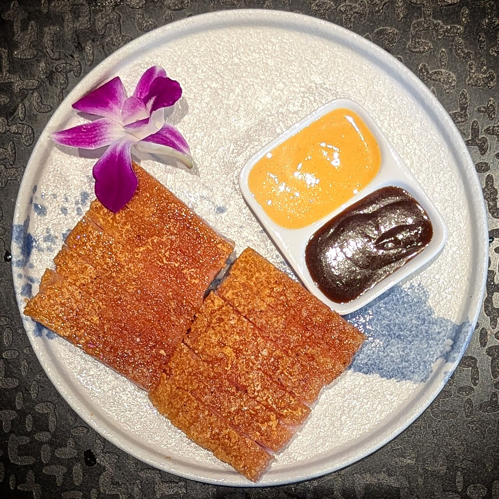
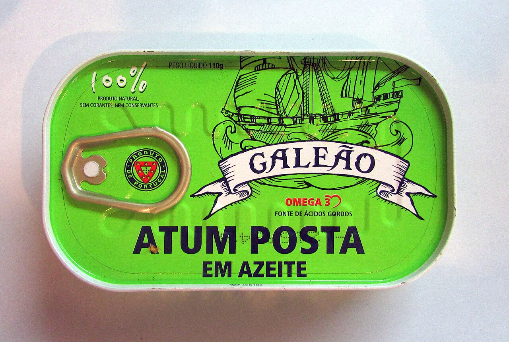
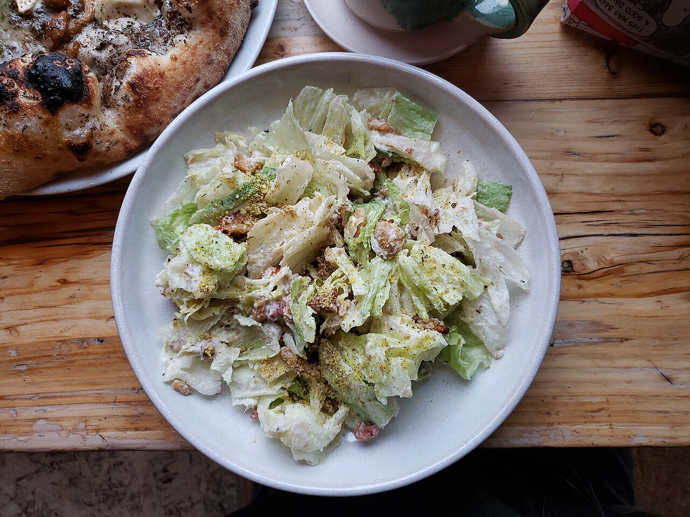
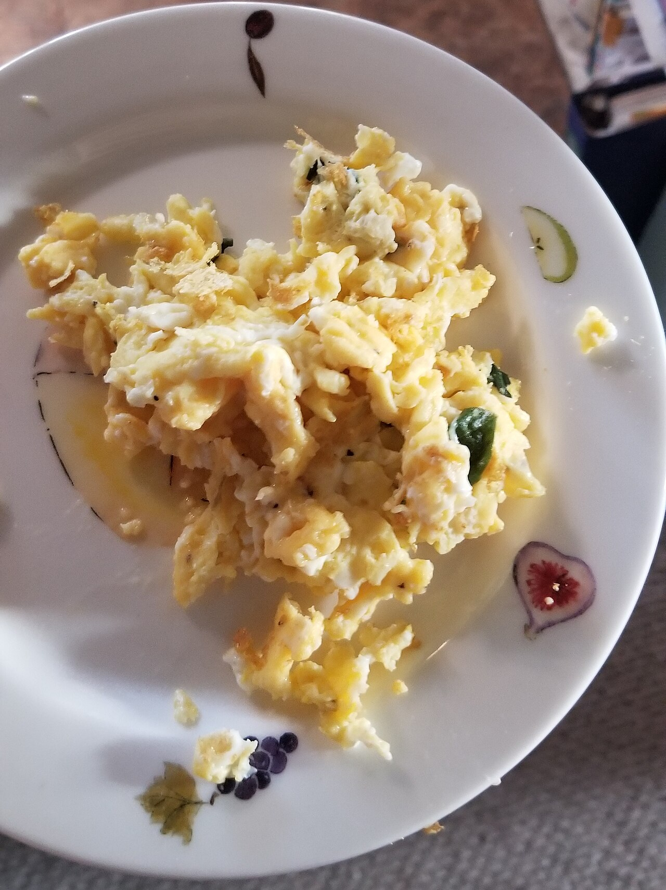
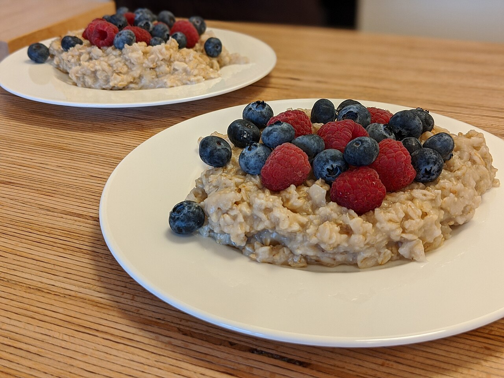

Titrate
Variation 03 of the phase-36 phone. Same data as ios-2.html — the same seven markers off, the same three goals, the same five moves, the same three meals, the same four adopted plan rows. What changes is the direction, and the fact that everything on this page actually runs: press Play and the Add flow plays out in the frame; tap a chip and the ring, the rail and the streak answer; toggle a habit and the expectation curve redraws under your finger.
Direction
Seed
0oOKPhT5ADArcO3HEhkIVSvF
- Read
- It opens 0 o O — a zero, then a small o, then a big one: one ring growing in three steps. It closes V S v F, a tall tick and a short one. Between them the letters keep spelling reagents: Ph is a pH, cO3 is a carbonate, K is potassium, AD is two of the vitamins on file, and hk — inside HEhkI — is HealthKit. Twenty-four characters, one for each hour. Fourteen loud, seven quiet, three digits: 0 + 5 + 3 = 8, and 3, 5, 8 are the space scale already.
- Mood
- A bench at six in the morning. You add one drop at a time and watch the number move; nothing here is a verdict, everything is a reading.
- Accent
- Verdigris #1f6b66 · #6fc9c2 dark — copper carbonate, which is what cO3 spells. It tints rules, the rail, the reagent labels, the switches and the projection curve. It is never a status word and never a fill behind text. Lime stays on the add control only; the spectrum stays green / amber / coral for state.
- Type
- Inside the five sizes, a 14 : 7 rhythm. Numbers are Geist Mono at 200 and 34 px; the label above every number is Geist Mono at 10 px, uppercase, tracked 0.14 em, in verdigris — a bottle label. Body stays 15, meta stays 13, nothing else is loud.
- Density
- Tight. 8 px between rows, 13 px inside cards, 21 px between blocks. Three goals, five move chips, the ring and the sentence all sit above the fold on a 390 frame.
- Cards
- Hairlines, no shadows. Radius 13 inside, 21 for a panel, 34 for the frame. A panel is a flat cream tile with one 1 px rule; the only tinted surfaces are the macro tiles and the landing line, both verdigris at 8 % — never behind small text at full strength.
- Motion
-
One easing,
cubic-bezier(.22, 1, .36, 1), and one duration family in Fibonacci milliseconds: 130 · 210 · 340 · 550 · 890. A drop falls (translate down 8 px, 3 px blur), it never fades in place. - The one idea
- The burette rail. A graduated 1 px column down the left of the moves block, with a mark for each move the day asks for. Every tick pours the column a little further. The day is a level, not a count, and the same rail runs down the website Home. The expectation chart follows it: the projection is a titration curve, flat, then steep, then a plateau at the landing number — because that is what these interventions actually do over eight weeks.
Today · tap the chips
Real. Tap a move chip: the check draws in over 340 ms, the ring fills, the rail pours, and when the fifth one lands the streak goes from six to seven and the flame bumps. The two chips Apple Health owns carry their source and the hour it arrived.
Saturday Sep 5
6Seven markers are off. Thyroid is the loudest one.
Goals
3 of 7 · Aug 1 drawToday's moves
tap a chip to tick itSince you were here
Sep 3 → Sep 5The ring counts adopted moves and nothing else, so it can never disagree with Plan. The rail is the same five moves read as a level — five graduations, poured from the top.
What the tick writes
one item, one day, one booleanThe chip is the hit area, 40 px tall and as wide as its words, so the 21 px box that the phone shipped is no longer the target. The check only draws after the write is accepted; if it fails the chip stays open and the error sits beside it, not at the foot of the scroll.
Steps and Resistance carry a source line. Both are ticked by Apple Health when the total lands, which is what the workouts sync now does; the drawing shows what it looks like when it works.
Suggested rows have no box
the plan bug, as a ruleA suggestion is not a habit yet, so there is nothing for a tick to write to. Adopt is the only control on a suggested row, and the caption above the group says so in one line.
Add · press Play
Four ways in, one waiting state, one receipt. Pick an input and press Play: the sequence runs on the Fibonacci timers in the frame, and the caption under the phone names the state it is in so the Swift build knows what it is copying. Nothing is written until the receipt appears, and the receipt always offers Undo.
Add
a · empty. Send is quiet and disabled. Nothing else is on the sheet, because everything else is a guess about what you meant.
The four seconds
what the app did not haveThe complaint was never the reading; it was the silence during it. Every path here collapses the field into the sentence you wrote, puts a three-dot loader beside the word “Reading”, and lands the kept words one at a time, 550 ms apart, so the wait is spent watching the machine work.
- Text — type, Send goes lime, the field collapses.
- Voice — one mic, a live waveform, the transcript arrives as the sentence and then takes the text path.
- Photo — the scan line sweeps 2.2 s, callouts land one per item, the meal card rises 21 px with the numbers counting up.
- Four photos — a thumbnail strip, each read in turn, one meal card at the end with the total.
Nothing kept
the other endingA reply is never empty. When nothing survives the read the same receipt says “Nothing to keep from that.”, the note stays on file unread, and the reader tries once more. Two attempts, then it rests.
The quick view, and where it lands
The screen after a meal or a tick: today's calories against the target, the protein, the shape of the day, and under it the one sentence the app exists for. Toggle a habit or a food rule and the curve redraws and the landing number moves — the arithmetic is the app's own, grade weight × adherence × how much of the trial's own duration eight weeks covers, clamped by MAX_CHANGE. Drag across the plot: the tooltip follows.
Today, so far
Eaten today
1 497 / 2 100
603 kcal left · 3 meals, 1 from a photo
The day
3 meals · 2 of 5 moves


LDL cholesterol
mg/dL · 2 drawsWhat is in the projection
tap to add or drop oneAdherence is your own last 30 days. A row with no number in its effect is listed as a gap and adds nothing, because a projection made of adjectives is not a projection.
The arithmetic
lib/projection.ts
Per action:
delta = effect × gradeWeight × adherence × min(1, horizon ÷
trialWeeks). Grade A and B count in full, C is halved, D and E are
excluded. The sum is clamped to
MAX_CHANGE.ldl_cholesterol × min(1, horizon ÷ 12),
which is 50 × 8/12 = 33.3 mg/dL here. The band is
√Σ(delta × gradeSpread)², spread 0.3 for A and 0.4
for B. The curve stops at the top of the goal band, because none
of these trials recruited anybody already inside it.
Why a titration curve
not a straight lineA straight line from today to the landing number promises progress in week one that no lipid trial has ever measured. Fibre and sterols take three to four weeks to show, then move fast, then plateau. The sigmoid is the honest shape, and it is the seed's shape too: 0 → o → O.
The website Home, 1280
The same components at desk width: the week strip, the burette rail with the same five move chips, the same expectation chart bound to the same toggles, the same meal cards. Tick a chip on the phone above and this frame answers, because it is the same state.
Seven markers are off. Thyroid is the loudest one.
Keep this eight weeks
LDL cholesterol · mg/dLToday's food
3 meals · 1 497 kcal est.



This week
6 day runToday's moves
2 of 5Apple Health
last sync 11:32Nothing on this frame is new CSS. WeekStrip, MoveChip, the burette rail, the projection plot, the tooltip and the meal card are the same classes as the 390 frames; only the grid around them changes.
Motion, and where the pictures came from
One easing everywhere:
cubic-bezier(.22, 1, .36, 1). One duration family, in
Fibonacci milliseconds. Nothing loops except the three states that are
genuinely waiting on a network call.
| What moves | Duration | Trigger |
|---|---|---|
| The check draws in MoveChip | 340 ms · 120 delay | the tick write is accepted, never before it |
| The chip presses | 340 ms · .96 → 1.03 → 1 | tap down |
| The ring fills ProgressRing | 890 ms | every accepted tick |
| The rail pours BuretteRail | 550 ms | the same accepted tick |
| The flame bumps StreakFlame | 550 ms, once | the last move of the day lands |
| The caret blinks | 890 ms, loops | the field has focus |
| The waveform | 90 ms per frame | the mic is listening; stops on the transcript |
| The three dots ReadingLoader | 1 200 ms, loops · 150 apart | Send is pressed, on all four paths |
| The scan line ScanOverlay | 2 200 ms, loops | the photo is uploaded; stops when vision returns |
| A kept word drops in | 550 ms, 550 apart | each chip the reader returns, in order |
| A callout lands Callout | 340 ms, 550 apart | one per item the vision call returns |
| The meal card rises MealCard | 550 ms · 21 px | the server total is accepted |
| The numbers count up | 550 ms | the same accepted total |
| The projection redraws | 550 ms | a habit or food rule is toggled |
| The tooltip appears ChartTooltip | 130 ms | pointer down on the plot; then it tracks with no animation |
Reduced motion. One variant covers all of it: every loop
stops at its end state, the check appears already drawn, drops and
callouts appear at full opacity with no offset, the ring and the
rail jump to their level, and the curve and the tooltip swap without
a transition. Nothing is removed; none of these animations carry
information the text does not already carry. This page respects
prefers-reduced-motion and the Play sequence runs on
the same clock with the same end states.
The photographs
real food, free licence
All seven are real photographs from Wikimedia Commons, downloaded
into ios-variations/img/. Credit and licence, in the
order they appear:
- Sardines on rye — “Sardines on German three-grain bread, with onion, capers, and mustard, kimchi on the side — Massachusetts” by Daderot · CC0 1.0
- The tin of sardines — “Canned sardines” by ProjectManhattan · CC BY-SA 3.0
- Tuna in olive oil — “Can of Tuna in olive oil, Poveira, Portugal” by Kolforn · CC BY-SA 4.0
- Pork belly — “Crispy roasted pork belly — San Francisco, CA” by Daderot · CC0 1.0
- The salad — “Caesar Salad — Purezza” by Andy Li · CC0 1.0
- The eggs — “Scrambled eggs with basil” by OmegaFallon · CC BY 4.0
- The oats — “Oatmeal porridge with fruits” by Shisma · CC BY 4.0
{kind=link}
{kind=link}
{kind=link}
{kind=link}
{kind=link}
{kind=link}
{kind=link}
The numbers are the ones on file. LDL 168 mg/dL on Dec 9 2025 and 131 on Aug 1 2026, goal band 70–100; 52 markers with a value, 7 off; TPO 320 IU/mL, vitamin D 19 ng/mL, ferritin 22 ng/mL; three meals on Saturday Sep 5 totalling 1 497 kcal est. and 93 g of protein against a 120 g target; steps 10 935 against a 90-day mean of 11 062; 3 workouts this week; a six-day run. The projection effect sizes and grades come from the seeded interventions catalog, and the adherences are the ones on the Plan rows.